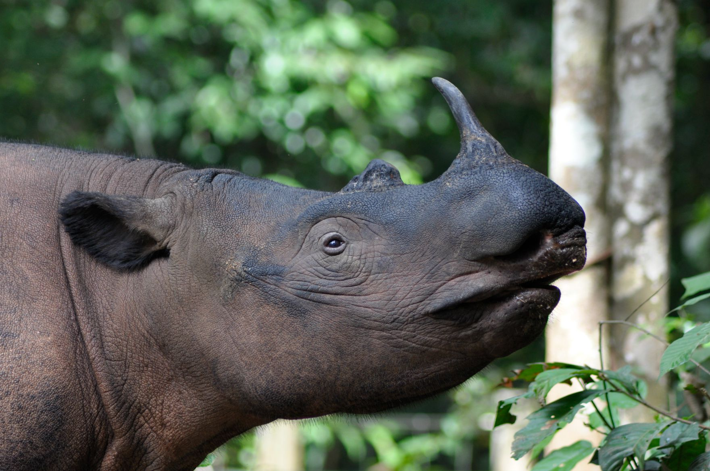

Rhinoceros Species
Protecting rhinos is essential for maintaining biodiversity and balanced ecosystems. As keystone species, rhinos shape their environments through their grazing, supporting various plants and animals and sustaining the natural habitats around them. Beyond ecological benefits, rhinos also play a vital role in eco-tourism, helping to support local economies and reinforcing the value of preserving these natural landscapes. Sadly, three out of five rhino species are critically endangered due to poaching and habitat loss: fewer than 80 Javan rhinos and Sumatran rhinos remain in isolated populations, while around 5,500 black rhinos survive, though they are still endangered despite slow recovery efforts. Saving rhinos is not only about preserving a species but also about conserving the diverse ecosystems they support, which benefits wildlife, local communities, and future generations.

WHITE RHINO
The white rhino, *Ceratotherium simum*, is the largest rhino species and is divided into two subspecies: the Southern white rhino and the Northern white rhino. The Southern white rhino, with an estimated population of over 15,000, primarily roams the grasslands and savannas of South Africa and parts of southern Africa, where conservation efforts have been relatively successful. However, the Northern white rhino, once found across parts of Central and East Africa, is now functionally extinct, with only two known females remaining in captivity. Conservationists are exploring advanced reproductive techniques, including in vitro fertilization, to attempt saving this subspecies. White rhinos inhabit open grasslands and woodlands with access to water, grazing on short grasses that help maintain the balance of the ecosystem by promoting new plant growth. Despite the success of conservation for the Southern white rhino, poaching remains a significant threat due to the high value of rhino horns in illegal markets. Habitat loss and human-wildlife conflicts also pose risks, putting pressure on already limited resources. For the Northern white rhino, the situation is critical, as natural reproduction is no longer possible without groundbreaking scientific intervention. The story of the white rhino underscores the urgency of proactive conservation to prevent further loss and protect these iconic animals from the brink of extinction.

BLACK RHINO
The black rhino, *Diceros bicornis*, is one of the most endangered rhino species, primarily due to poaching and habitat loss. Native to eastern and southern Africa, black rhinos prefer savannas, grasslands, and scrublands where they can feed on a variety of vegetation, including leafy plants, branches, shoots, and thorny bushes. Unlike the white rhino, which is a grazer, the black rhino is a browser, which contributes to maintaining the ecological balance of its habitat by controlling woody plant growth and promoting biodiversity. Despite intensive conservation efforts, black rhinos remain critically endangered, with an estimated population of around 5,500. The species has faced devastating losses over the last century, with populations plummeting by over 90% due to the illegal demand for rhino horn. While some population recovery has occurred due to protective measures and anti-poaching initiatives, black rhinos are still highly vulnerable, particularly in unprotected areas. Their slow reproduction rate, combined with ongoing poaching pressures, poses a continuous risk. The plight of the black rhino emphasizes the need for vigilant conservation efforts to preserve this species and safeguard the ecosystems they help sustain.

JAVAN RHINO
The Javan rhino, *Rhinoceros sondaicus*, is one of the world’s rarest large mammals, with fewer than 80 individuals left in the wild. This critically endangered species is now confined to Ujung Kulon National Park on the western tip of Java, Indonesia, which represents its last viable habitat. Once found across Southeast Asia, Javan rhinos have suffered dramatically from habitat loss, hunting, and natural disasters, which have reduced their range to a single, vulnerable population. Javan rhinos inhabit dense lowland tropical forests, swamps, and coastal areas, thriving in areas with abundant vegetation where they browse on shoots, twigs, and young foliage. Despite their isolated population, these rhinos are vital to their ecosystem, as their foraging habits promote plant diversity and forest health. The level of threat to Javan rhinos is extreme. With such a limited range, they face critical risks from disease, potential poaching, and habitat degradation. Additionally, the population’s lack of genetic diversity limits their ability to adapt to changing environmental conditions. Conservation efforts focus on strict habitat protection, anti-poaching patrols, and exploring the possibility of establishing a second population to reduce the risk of extinction from localized threats. The Javan rhino's precarious status highlights the urgent need for robust conservation strategies to protect this unique species and the ecosystem it helps sustain.

SUMATRAN RHINO
The Sumatran rhino, *Dicerorhinus sumatrensis*, is the smallest and most ancient of all rhino species, but it is critically endangered, with fewer than 80 individuals remaining. Native to the dense tropical forests and swamps of Sumatra and Borneo, these rhinos are primarily found in a few protected areas in Indonesia. Known for their shaggy coats and solitary nature, Sumatran rhinos thrive in moist, thick forests where they browse on leaves, fruits, and saplings, helping to maintain forest diversity by promoting plant growth through their selective feeding habits. The Sumatran rhino’s level of threat is among the highest for any large mammal. Habitat loss due to logging, agricultural expansion, and infrastructure development has significantly reduced their range. Poaching also played a substantial role in their dramatic population decline, though stringent protection has helped curb this threat in recent years. However, their isolated and fragmented populations limit natural breeding, which exacerbates the risk of inbreeding and further population decline. Conservationists are undertaking intensive efforts to save the species, including managed breeding programs and habitat protection, to help ensure a viable future for the Sumatran rhino. Despite these efforts, the species remains on the brink of extinction, underscoring the urgent need for continued conservation actions and habitat preservation.

GREATER ONE HORNED RHINO
The Greater One-Horned Rhino, or Indian Rhino (*Rhinoceros unicornis*), is a conservation success story, though it remains vulnerable. Native to the floodplains and grasslands of India and Nepal, this species primarily resides in protected areas such as Kaziranga National Park in India and Chitwan National Park in Nepal. Known for its single horn and thick, armor-like skin, the Greater One-Horned Rhino thrives in wet, swampy regions and tall grasslands where it grazes on grasses, aquatic plants, and fruits. Their presence plays an essential ecological role, shaping the vegetation and promoting biodiversity within their habitat. Historically, these rhinos were nearly driven to extinction due to excessive hunting and habitat loss, with populations dropping to fewer than 200 individuals in the early 20th century. Thanks to intense conservation efforts, their numbers have rebounded to around 3,700 individuals. However, they remain vulnerable to threats such as poaching, habitat fragmentation, and human encroachment. The demand for rhino horn on illegal markets continues to put pressure on the species, and they face risks from flooding and habitat changes due to climate change. Continued efforts in habitat preservation, anti-poaching measures, and community engagement are essential to secure the future of the Greater One-Horned Rhino and the diverse ecosystems they help maintain.